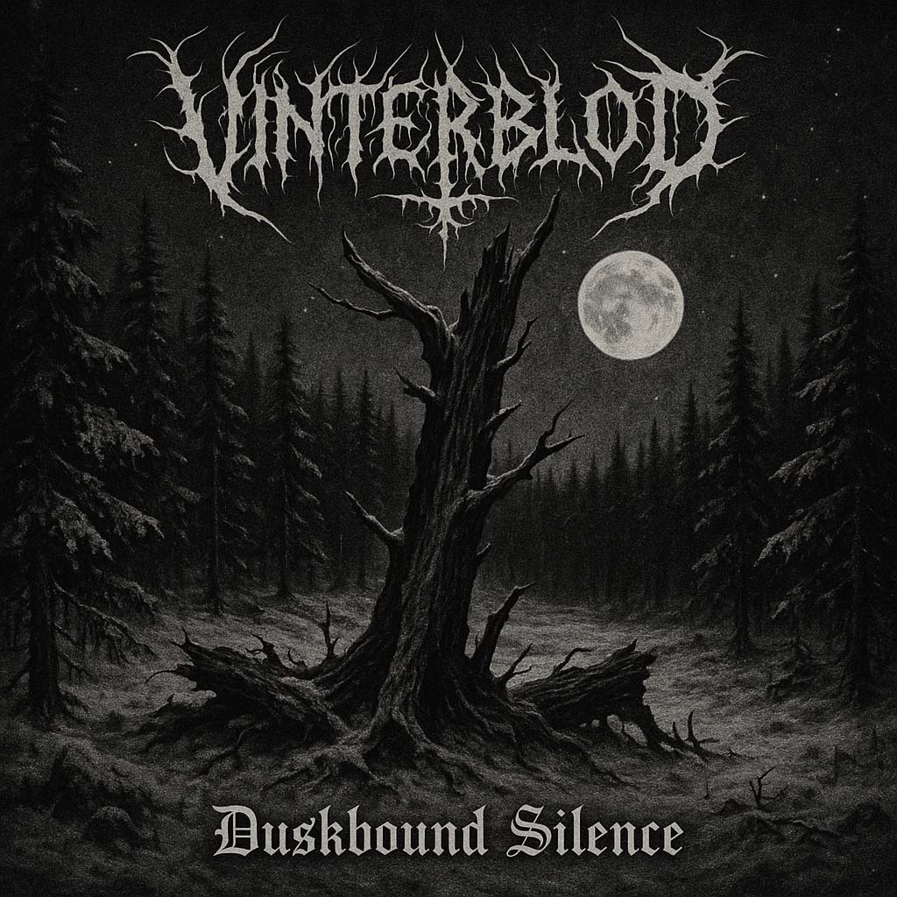
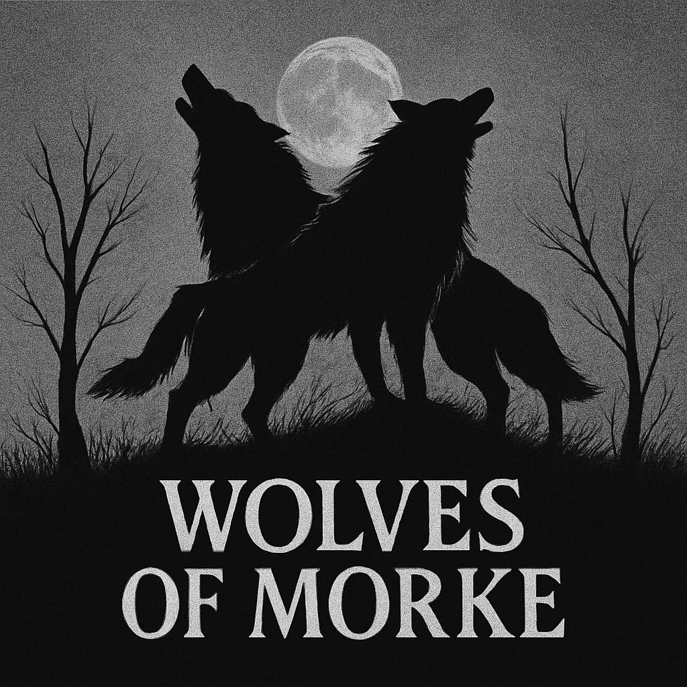

DISCOGRAPHY

Duskbound Silence (2024)
A bleak and cold journey through snow-covered silence. Featuring atmospheric riffs and haunting howls from the void.

Wolves of Morke (2022)
Twin howls under the blood moon. This early release carved VINTERBLOD’s name into the frostbitten landscape.